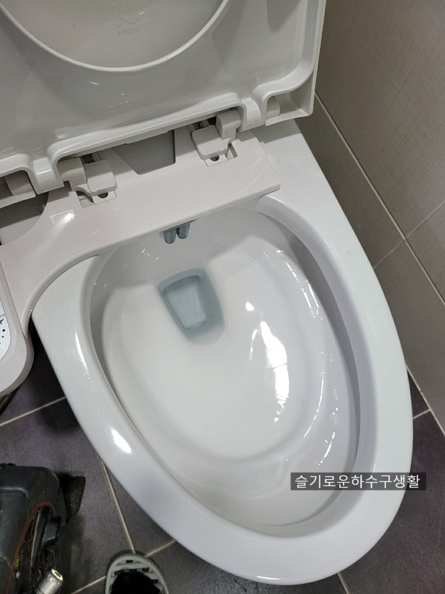
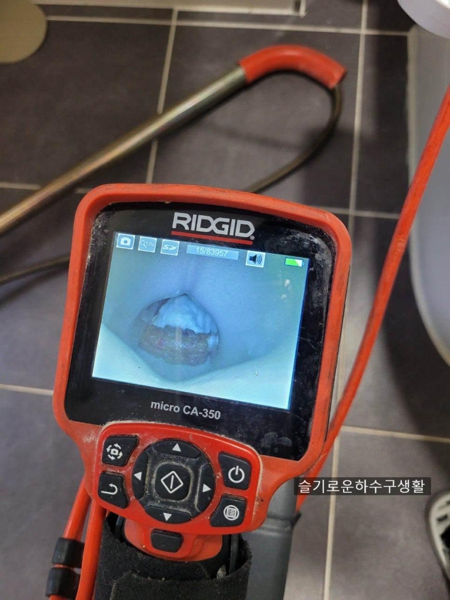
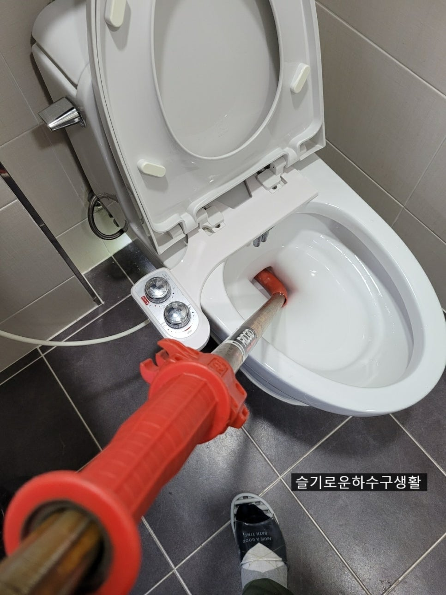
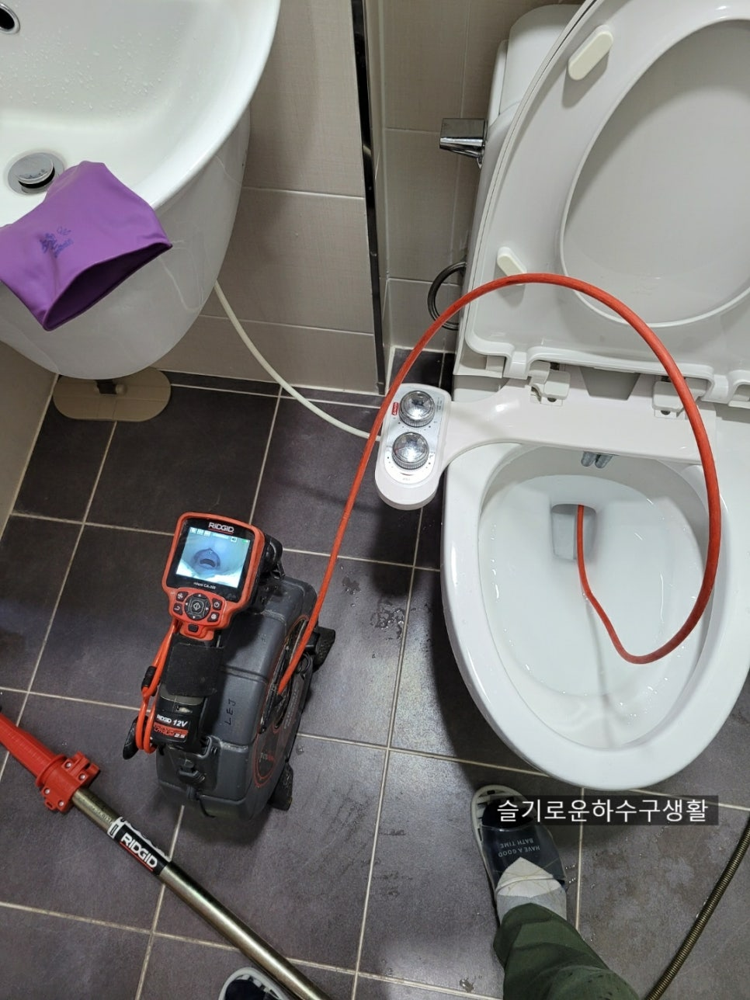
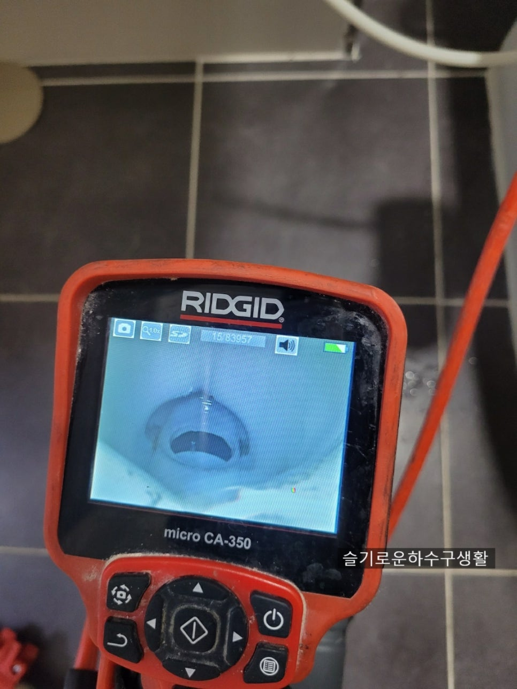

🏠 곡반정동 권선동 변기막힘 권선구 변기뚫기
서울 곡반정동 변기막힘 전문 시공 후기

📋 작업 개요
- 위치: 서울 곡반정동, 곡반정동, 서울
- 서비스 유형: 변기막힘, 하수구막힘, 배관막힘, 뚫는업체
- 작업 일시: 2021. 9. 25. 20:41
- 업체명: 하수구수사대 (010-5615-2118)
🔍 문제 상황
안녕하세요!
하수구수사대 인사드립니다.
오늘도 비가 내려서 창문을 열고
비내리는 소리를 들으니 왠지
힐링? 되는 기분이 들더라구요.
비멍~~~이랄까요? ^^
어쨌든 요즘 비가 많이 오는데
모든분들 비피해 없으시길
바랍니다.
오늘은 인계동의 오피스텔 원룸의
변기가 막혔다고 하여
출동하였습니다.
작업전 변기물이 시원하게 내려가지않음
고객께서는 사과를 먹다가
남은걸 넣어서
변기가 꽉!! 막혔다고 합니다.
직접 뚫으려고 이방법 저방법
시도했는데 다행히
물은 내려가는데
시원하게 내려가지않아

🔎 원인 분석
💡 전문가 진단: 룸변기뚫는방법 인계동 곡반정동 망포동 변기막힘해결
저희에게 연락을 주셨네요.
룸변기뚫는방법 인계동 곡반정동 망포동 변기막힘해결
오피스텔이나 원룸의 구조처럼
변기가 한개인곳은
막히면 정말 난감합니다.
아파트처럼 변기가 두개가 있으면
시간적 여유가 있지만
오피스텔이나 원룸의 경우에는
가급적 빨리 해결하는게
좋습니다.
변기안에 이물질
우선 작업전 변기안에
무엇이 있는지
내시경으로 촬영을
해보았습니다.
고객께서는 분명 사과라고 했는데
저의 눈에는 사과처럼
보이지는 않네요.
일단 오물이 나가야할 구멍을
휴지뭉치가 꽉 막고있어서
관통기장비를 선택하였습니다.

🔧 작업 과정
관통기작업
관통기 작업으로
배관안에 이물질을 내보내는
작업을 하고 있습니다.
변기막힘의 경우 단순하게
막히면 집에서도 뚫어뻥이나
압축기 또는 철물점에서
판매하는 관통기가 있기는한데
안에 이물질이 들어간 경우에는
완벽하게 빼내거나 배관밖으로
밀어내지 못하면
자주 막히는 현상이 생깁니다.
단순하게 막혀서 자가해결이
가능해서 막힘증상이
없어졌다면 다행인데
증상이 계속된다면
저희같은 전문가를 불러서
해결하시는것이 좋습니다.
내시경검수
관통기 작업후 내시경으로
확인작업 중입니다.
아까보였던 이물질이
깔끔하게 없어졌네요^^
오피스텔원룸변기막힘은 대부분
음식물이나 물티슈가 많더라구요.
그중에 음식물이 더 많구요.
변기에버리고 내리면
아무래도 편하긴 하지만
이물질이 걸려서
스스로 해결하지 못하면
음식값의 몇배가 나간다는
슬픈현실이 생길수 있으니
제발 변기에 음식물은 넣지


✅ 작업 완료
말아주세요^^
내시경으로 확인했어도
마지막으로 휴지를 넣어서
한번더 테스트 해봅니다.
시원하게 해결되었습니다^^
오피스텔변기막힘 원룸변기막힘 해결!
이상" 하수구수사대" 였습니다
하수구수사대 010-2340-2118
서울경기인천 어디든 출동가능



⚠️ 하수구 배관 막힘 예방 및 관리 가이드
- ✅ 머리카락, 비닐, 물티슈 등 물에 분해되지 않는 이물질은 하수구 유입을 절대 금지해 주세요.
- ✅ 하수구 거름망을 씌우고 모여진 이물질은 주기적으로 쓰레기통에 바로 비워주셔야 합니다.
- ✅ 배관 노후가 심할 경우 이물질이 더 쉽게 걸리므로 주기적인 배관 세척(고압세척 등)을 권장합니다.
- ✅ 작업 후 1년 이내 재발 시 하수구수사대에서 무상 A/S 보증 서비스를 제공합니다.
💡 핵심 정리
- 확실한 장비 작업(내시경 점검 및 샤프트 스케일링)으로 원인을 뿌리 뽑습니다.
- 작업 후 1년 이내에 동일한 부위 재발 시 100% 무상 A/S 서비스를 보장합니다.
- 서울 · 경기 · 인천 전 지역에 24시간 언제든 긴급 출동할 수 있도록 항시 대기 중입니다.
❓ 자주 묻는 질문 (FAQ)
🚨 서울 곡반정동 변기막힘 문제로 고민이신가요?
정확한 원인 진단과 확실한 시공으로 재발 없는 해결을 약속드립니다.
24시간 긴급 출동 | 서울 · 경기 · 인천 전지역 | 1년 내 재발 시 무상 A/S